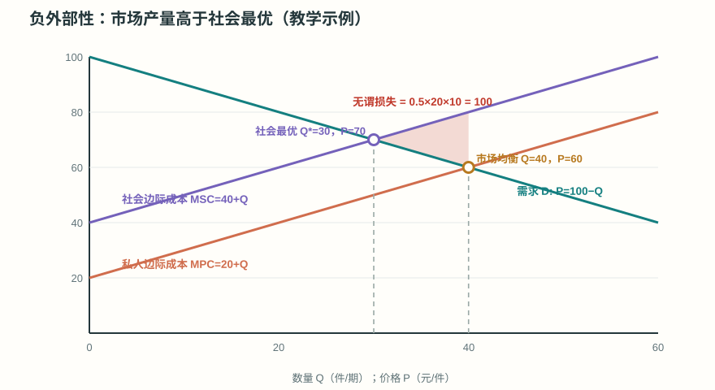
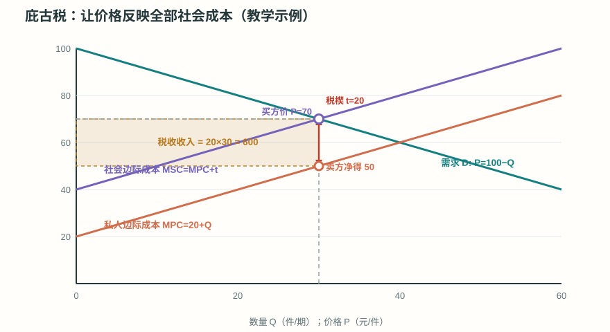

CHAPTER 19 · MICROECONOMICS
外部性：私人成本与社会成本
当价格没把旁人的损失算进去，市场就会生产得太多或太少：用同一组方程推导外部性的无谓损失与庇古税的矫正。
当价格没算上别人的损失
工厂排污水、汽车尾气、深夜噪音……这些成本没有进入生产者的账本，却由旁人默默承担。于是市场价格只反映了私人成本，忽略了外部成本，社会意义上“正确的量”就与市场自发的结果不同。这就是外部性 externality：一方的行为给旁观者带来未通过价格补偿的影响。
外部性分两类：负外部性（排污、拥堵）使社会成本高于私人成本，市场产量过多；正外部性（疫苗接种、教育、研发）使社会收益高于私人收益，市场产量过少。本章用同一组方程把这两类偏差算清楚。
负外部性：市场生产过多的“坏”
教学示例：需求 P=100−Q，私人边际成本 MPC=20+Q，每生产一单位对外部造成 20 元的损失（MEC=20）。因此社会边际成本 MSC=MPC+MEC：
但市场只看私人成本：100−Q=20+Q，解得 Q=40、P=60。社会最优要求价格等于社会成本，解得 Q*=30、P*=70。市场比社会最优多生产了 10 单位——因为这 10 单位的私人账本没算上那 20 元的外部损失。

庇古税：把外部成本算进去
矫正负外部性的一种办法是庇古税 Pigouvian tax：按单位外部成本对生产者征税。令 t=MEC=20，生产者面对的边际成本变为 MPC+t：
新均衡下，买方支付 70、卖方净得 50（=70−20），产量回到社会最优 30。税收收入 =20×30=600，无谓损失被消除。税把“别人承担的损失”变成了生产者自己面对的成本。

正外部性与科斯定理
正外部性 positive externality使社会收益高于私人收益，市场产量过少。例如接种疫苗降低了他人被感染的概率、研发的知识会外溢给同行、修絭个人花园让邻居也受益。常见的矫正手段包括补贴、公共供给或知识产权保护（用排他性收益激励创新）。
科斯定理 Coase theorem：只要产权清晰界定、谈判无摩擦且交易成本可忽略，那么无论产权最初归谁，当事人通过讨价还价都能达到有效结果。它强调两点：产权是否清楚，以及谈判成本有多高。
但现实中常常人数众多、信息不对称、谈判成本高昂，平等协商难以实现。因此庇古税、可交易的排污权、标准与管制等工具依然重要。不同的政策工具各有代价，需要具体评估。
交互实验：税率高低
庇古税的矫正与过度矫正
需求固定为 P=100−Q，私人边际成本 MPC=20+Q，单位外部成本为 20（故社会最优产量为 30）。拖动滑块改变对生产者征收的单位税 t，观察成交产量、买方价、税收收入与无谓损失。
税率 t=0：成交 Q=40，买方价 P=60，税收收入=0，无谓损失=100；税率低于外部成本 20，产量仍高于社会最优 30。
税率 t 为 0 时即无干预的市场结果；t=20 时产量回到社会最优 30，无谓损失为 0。数值均为教学示例。
当 t=40 时无谓损失是多少？它和 t=0 时相比说明了什么？
查看答案
t=40 时 Q=20，无谓损失 =(40−20)²/4=400/4=100，与 t=0 时相同。这说明矫正不足与矫正过度都会造成效率损失，只有税率恰好等于单位外部成本（20）时无谓损失才为零。
引用文献与适用范围
本章的方程与数值（需求 P=100−Q、MPC=20+Q、MEC=20）均为教学示例，不是观测数据；外部性与相关政策工具的概念参考以下教材：
- OpenStax · Principles of Microeconomics 3e, Ch. 12: Environmental Protection and Negative Externalities
- OpenStax · Principles of Microeconomics 3e, Ch. 13: Positive Externalities and Public Goods
- OpenStax · Principles of Microeconomics 3e（教材首页）
庇古税与科斯定理均为经济学标准概念，本章以文字概括其逻辑，未引用具体环境规制案例的金额或减排数据，以免不可核验。现实中外部成本的测量、政策工具的选择与分配效应都需要具体分析。